âniskômohcikewin
A re-envisioning of cultural and community revitalization on reserve, weaving contemporary theory on play and placemaking with Cree practices of gathering and playful engagement.
- Context
- Master of Interdisciplinary Design thesis, Emily Carr University of Art + Design
- Place
- Fisher River Cree Nation (Ochekwi-Sipi), Manitoba, Treaty 5
- Methods
- Two-eyed seeing, land-based observation, interviews, Creative Reflections workshops
- Completed
- December 2024

Overview
My thesis, Playful Knowings, is a case study in my own First Nation, Fisher River Cree Nation (Ochekwi-Sipi). Using Elder Albert Marshall’s “two-eyed seeing,” Indigenous methodologies of relationality, situating and reciprocity and culturally appropriate participatory design, it argues that a playful, Indigenous-led practice of designing an intergenerational structure for outdoor gathering on reserve could strengthen a community’s sense of identity and well-being.
It presents the possibilities of a community-led design practice that recognizes the strengths, assets and cultural abundance of First Nations, rather than one that focuses on deficit, scarcity or limitation.
Three ways of listening
- Land-based observationIn-person time in Ochekwi-Sipi, including major cultural events across the summer and winter of 2023–2024.
- InterviewsConversations with community members and Elders who engage in play, healing and placemaking practices.
- Creative Reflections workshopsThree workshops in which participants playfully redesigned everyday objects to reflect their own sense of joy, as a way to re-envision an outdoor gathering place.
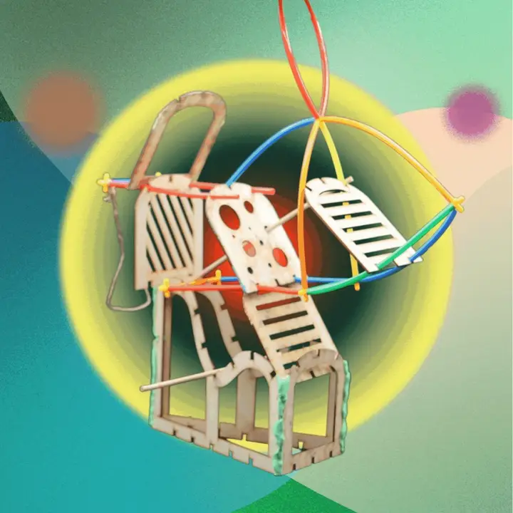
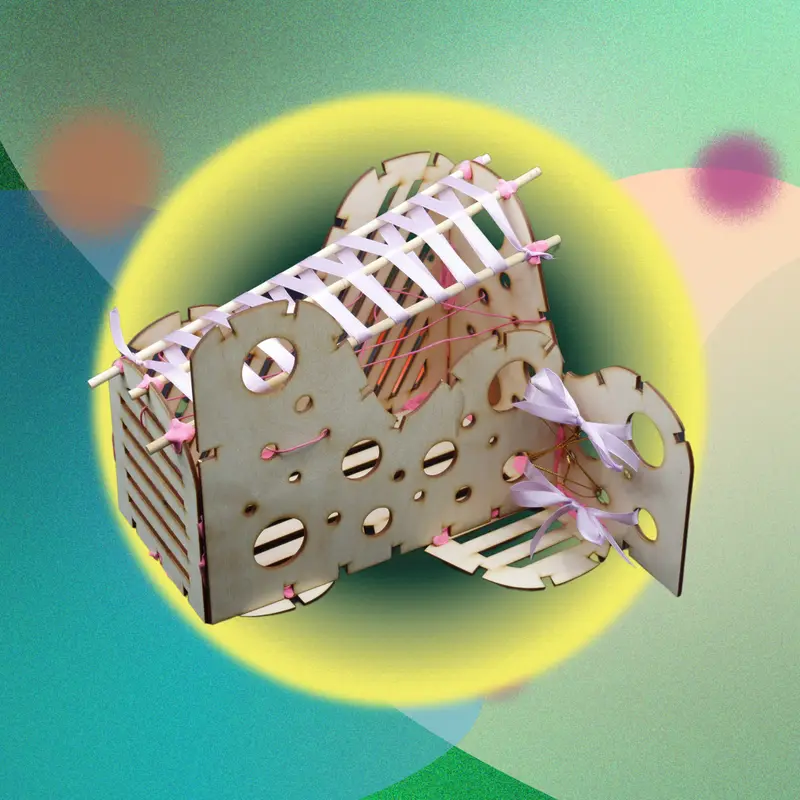
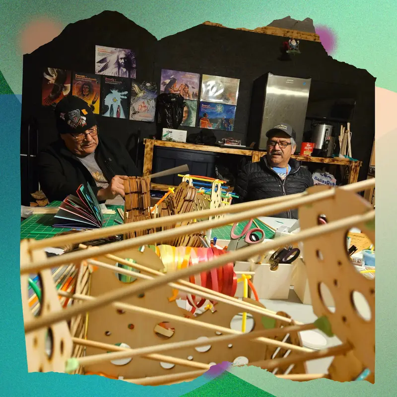
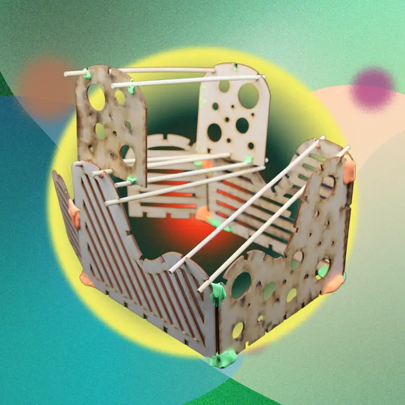
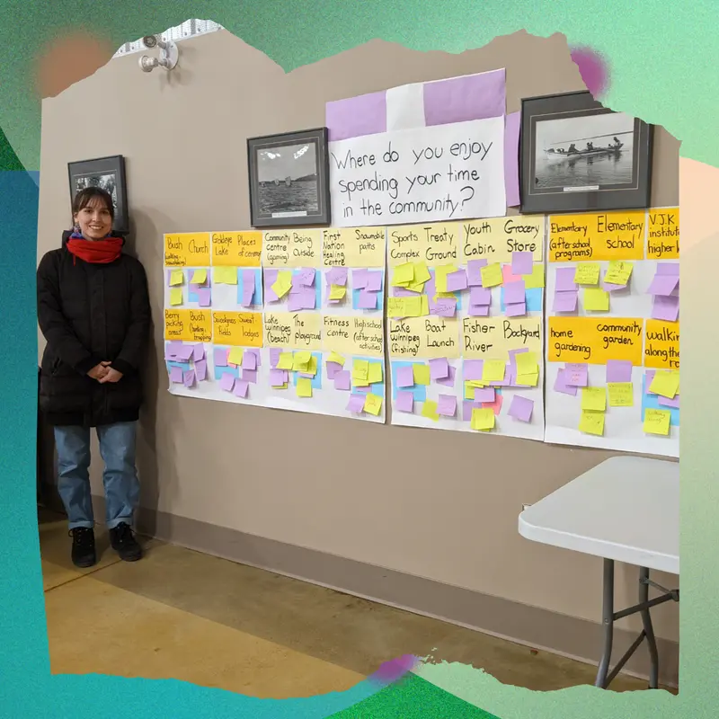
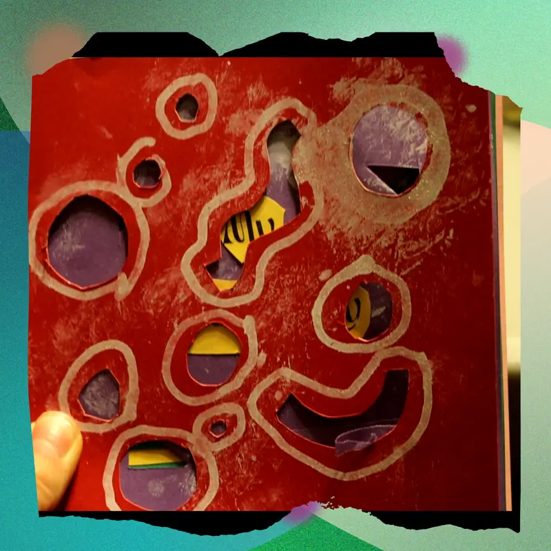
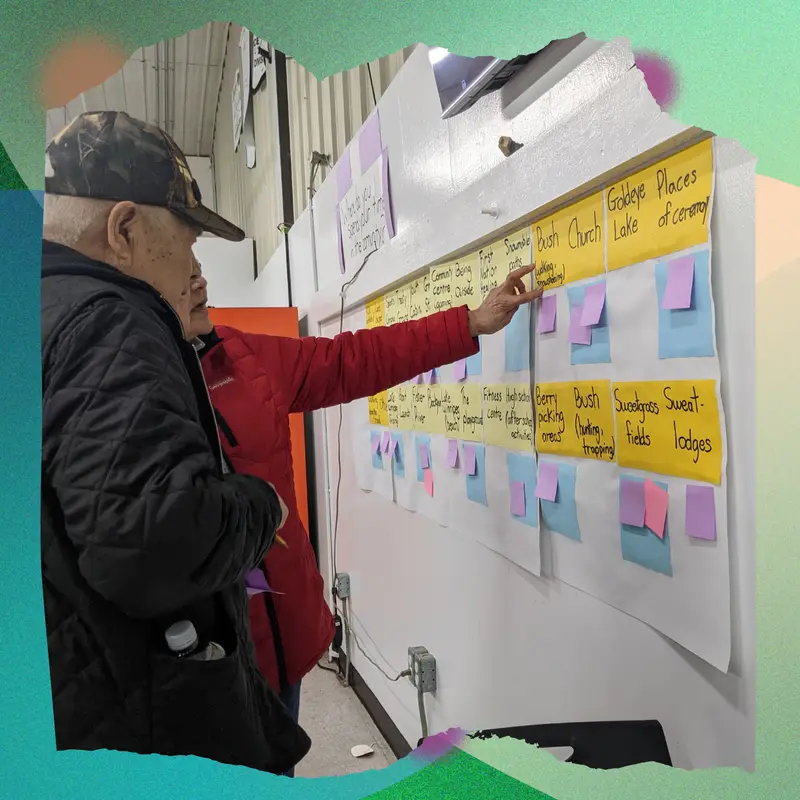
Interview reel: community members on play, gathering and healing.
Six characteristics of a playful gathering place on reserve
In no particular order. Together they describe an interpretive space that doesn’t need complex architecture, a formal program or even four walls and a roof.
Agency
Self-led exploration and expression. The place affords high-energy activity like conversation, play and teachings, or low-energy activity like resting near others.
Spiritual & cultural practice
A meeting place for relatives, children, Elders, knowledge keepers and land-based practitioners. Social buffers like a community fire, coffee or smudging help people get acquainted.
Interconnection
Intergenerational: connecting children, youth, adults, Elders, spiritual ancestors and the natural environment, while reflecting on future generations.
Familiarity & proximity
Close to existing landmarks and places of gathering, carrying the cultural character of the community and land so it feels familiar and safe.
Accessible
Few physical barriers such as fences, gates or hours. Built for the climate and for community-level maintenance, so habits can form.
Enjoyable
Joy that doesn’t need a predefined activity: contentment, laughter, teasing, reconnecting. Part of shedding internalized colonial oppression as self-healing.
Conceptual drawingsA place named for connection
The conceptual gathering place is named âniskômohcikewin, the Cree word meaning connections. It isn’t an architectural design; it’s an informed, creative embodiment of the six characteristics.
It sits on the Treaty Grounds, slightly east of the land-based cabin, in three parts. At the top, curved benches of natural lumber make three semi-circles around a central firepit, descending into slat walkways that mark the points of entry. The centre structure has ten panels holding materials that respond differently to the year-round environment, with benches along its sides. In the last section, repurposed river rocks offer places to sit apart or together. It’s roughly 30 metres long, 5 wide and 6 high.
It is also a joyful picture of Ochekwi-Sipi’s fishing history: people and animals move into the narrow mouth of the central structure like fish, inspired by fishing boats and traps, then exit around the rapid rocks into the metaphorical river. The wide mouth faces the real river, about 150 metres away.
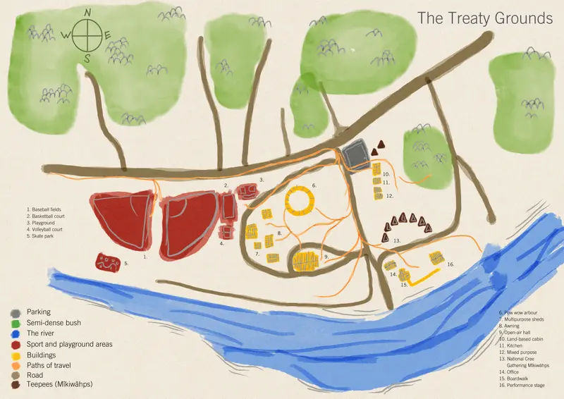
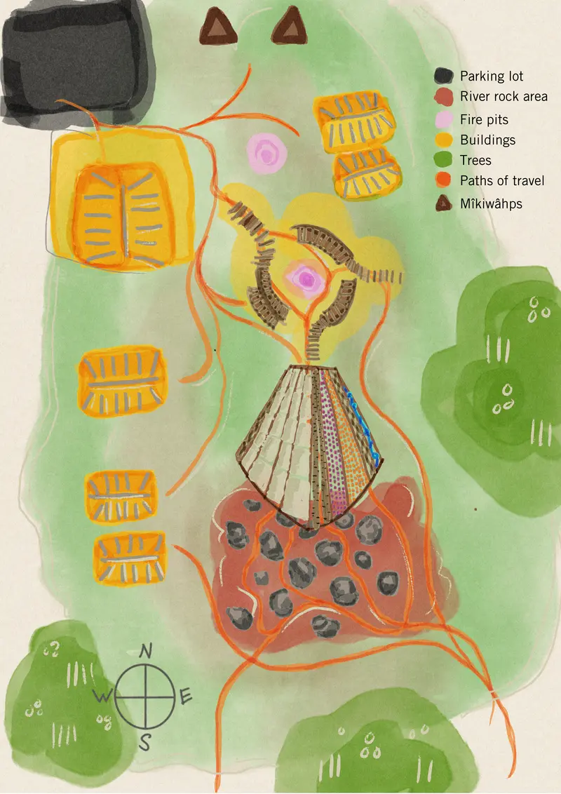
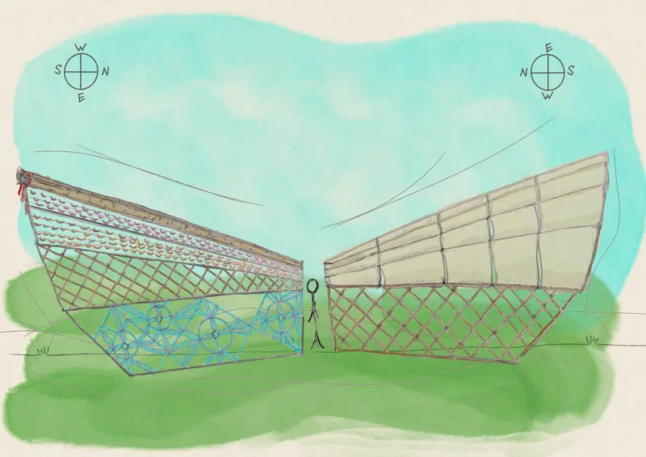
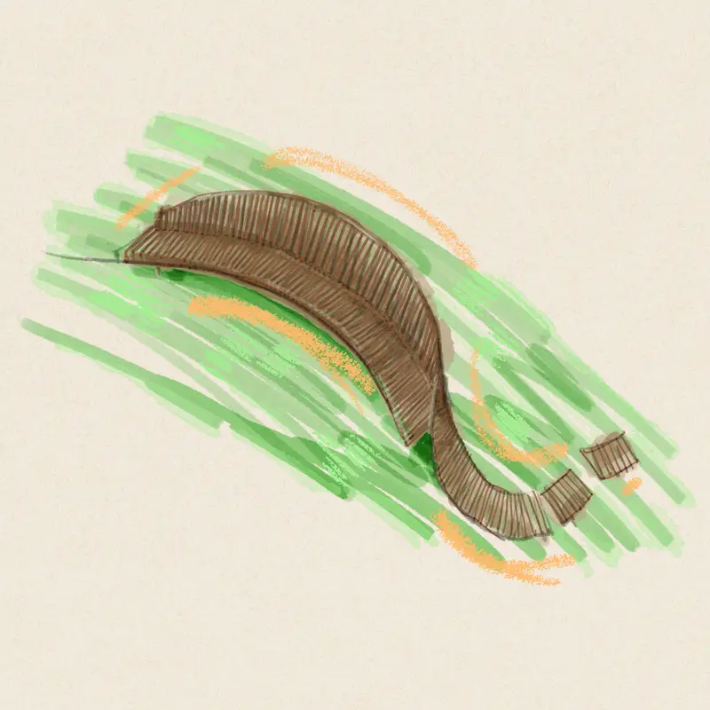
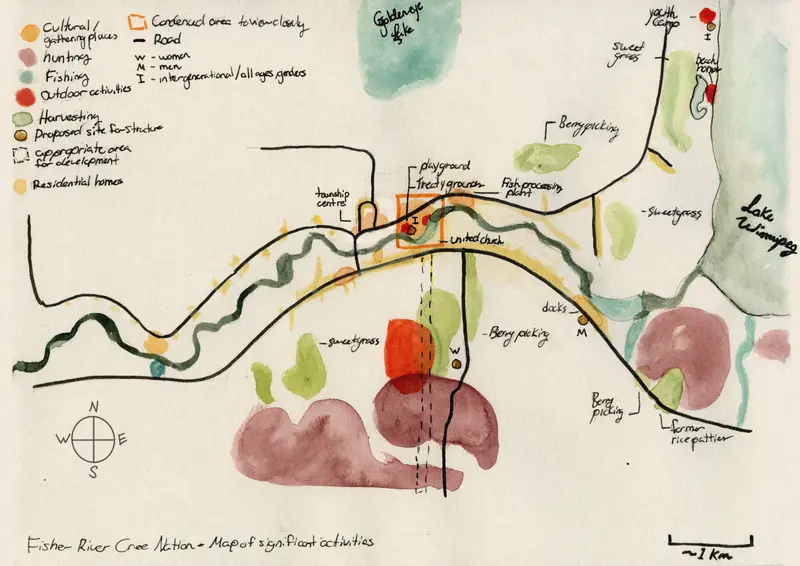
A place that first fosters a sense of safety and well-being, then leads to a sense of play and enjoyment.From Playful Knowings